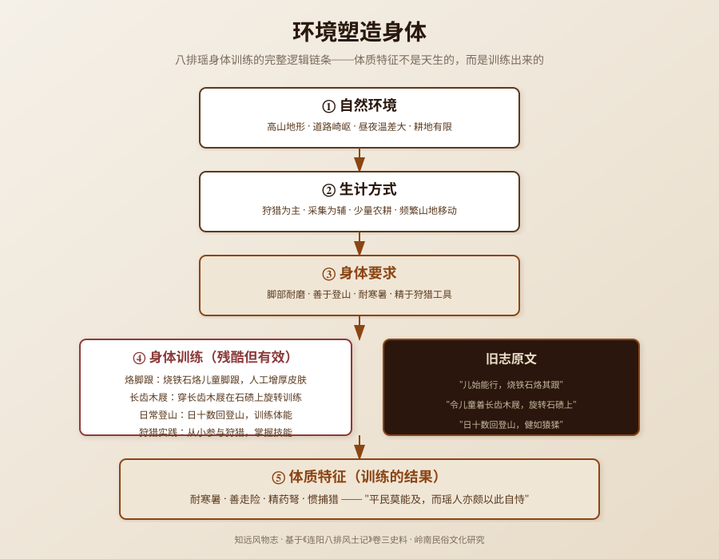

清康熙年间，连州知州李来章在《连阳八排风土记》中记录了一个令人震惊的习俗——"儿始能行，烧铁石烙其跟，虽践枳棘巉石终不能伤。"儿童刚会走路，就用烧红的铁石烙脚跟，使其不怕荆棘。八排瑶"健如猿猱"的体质不是天生的——烙脚跟、穿长齿木屐在石碛上旋转训练，这是一套完整的"环境塑造身体"训练体系。本文基于《连阳八排风土记》，还原八排瑶的身体训练与生存智慧。
讨论"八排瑶身体训练"，必须先区分五个层次，避免概念混杂：
| 概念 | 性质 | 说明 | 本文是否讨论 |
|---|---|---|---|
| 烙脚跟 | 身体训练 | 烧铁石烙儿童脚跟，使其皮肤增厚 | 是，核心讨论对象 |
| 长齿木屐训练 | 身体训练 | 穿长齿木屐在石碛上旋转，训练平衡和脚力 | 是，核心讨论对象 |
| 体质特征 | 身体能力 | 耐寒暑、善走险、精药弩、惯捕猎 | 是，核心讨论对象 |
| 高山环境 | 自然环境 | 八排瑶居住在高山，需要走险路、捕猎 | 是，作为背景 |
| 族群认同 | 社会身份 | 身体能力成为族群边界的标志 | 是，作为深层分析 |
本文讨论八排瑶的身体训练方法（烙脚跟、长齿木屐训练）、体质特征（耐寒暑、善走险、精药弩、惯捕猎）、生存环境与身体的关系，以及身体训练的社会功能。
八排瑶是瑶族的一个支系，主要聚居在广东连州、连山一带的高山地区。"八排"指八个主要的排（村寨），因居住在连阳地区（连州、阳山一带），又称"连阳八排瑶"。
本文所见材料来自《连阳八排风土记》（清康熙年间，李来章撰）卷之三《风俗·瑶种》。李来章是清代康熙年间的连州知州，他在任期间深入八排瑶地区，记录了八排瑶的风俗习惯，是研究八排瑶历史的重要史料。
需要特别说明的是，本文记录的是旧志中记载的八排瑶身体训练方法，不是对这种方法的伦理评判。本文的核心问题不是"烙脚跟对不对"（这是显而易见的残酷），而是"八排瑶为什么要进行这种身体训练"——背后的生存逻辑是什么？这种身体训练如何适应高山环境？身体训练如何成为族群认同的标志？
同时需要注意历史称谓的问题：旧志中使用的"猺"字，是历史文献中的称谓，与今天的"瑶族"不能直接画等号。旧志的编纂者是汉族官员，他们对八排瑶习俗的记载是从外部视角进行的观察和记录，可能存在误解、偏见和简化。因此，本文在引用旧志记载时，始终保持"旧志所见"的限定。
根据《连阳八排风土记》的记载，八排瑶的身体训练主要有两种方法：
"儿始能行，烧铁石烙其跟，虽践枳棘巉石终不能伤。"
儿童刚会走路的时候，就用烧红的铁石烙脚跟，使脚跟皮肤增厚、失去知觉，这样即使踩在荆棘和尖石上也不会受伤。
这是一种"人工茧"的训练方法——通过烧伤让脚跟皮肤增厚，形成类似老茧的保护层，相当于天然的鞋子。在高山地区，道路崎岖，荆棘和尖石遍布，赤脚行走很容易受伤。烙脚跟通过"人工增厚皮肤"的方式，让八排瑶人可以赤脚在高山上行走而不受伤。
这种训练方法的残酷性是显而易见的——用烧红的铁石烙儿童的脚跟，对儿童来说是巨大的痛苦。但从生存逻辑看，这是适应高山环境的"身体改造技术"——在没有鞋子（或鞋子不适合高山行走）的情况下，通过改造身体来适应环境。
"或令儿童着长齿木屐，旋转石碛上，日十数回登山，俾其习惯陟岭，健如猿猱，平民莫能及，而瑶人亦颇以此自恃。"
或者让儿童穿长齿木屐（鞋底有长齿的木屐），在石碛（碎石堆）上旋转，每天登山十几次，使其习惯登山，健步如猿猴，平民（汉族）比不上，而瑶人也颇以此自恃。
这是一种"平衡训练"和"脚力训练"的方法——穿长齿木屐在碎石堆上旋转，训练平衡感和脚力；每天登山十几次，训练登山能力。长齿木屐的鞋底有长齿，在碎石堆上行走更困难，需要更强的平衡感和脚力。通过这种"高难度训练"，八排瑶儿童的平衡感和脚力得到极大提升，长大后可以在高山上健步如飞。
"日十数回登山"说明训练强度很大——每天登山十几次，这对儿童来说是高强度的体能训练。但这种训练是有效的——"俾其习惯陟岭，健如猿猱"，训练后的八排瑶人登山能力极强，"平民莫能及"（汉族人比不上）。
"瑶人亦颇以此自恃"说明这种身体能力成为八排瑶人的骄傲——他们以自己的登山能力为荣，身体能力成为族群认同的标志。
经过长期的身体训练，八排瑶形成了独特的体质特征：
"其人耐寒暑"——八排瑶人能够忍受寒冷和酷暑。高山地区昼夜温差大，白天炎热，夜晚寒冷，八排瑶人通过长期的生活和训练，适应了这种温差大的气候。
"善走险"——八排瑶人善于在险峻的山路上行走。高山地区道路崎岖，荆棘和尖石遍布，八排瑶人通过烙脚跟（人工增厚皮肤）和长齿木屐训练（平衡和脚力训练），获得了在险峻山路上行走的能力。
"精药弩"——八排瑶人精通毒药和弩箭。高山地区狩猎是重要的生计方式，毒药和弩箭是狩猎的重要工具。八排瑶人通过长期的实践，掌握了毒药的配制和弩箭的使用，成为狩猎的高手。
"惯捕猎"——八排瑶人习惯于捕猎。高山地区耕地有限，狩猎是重要的食物来源。八排瑶人从小就接受狩猎训练，熟悉山林中的动物习性和狩猎技巧，成为熟练的猎人。
这四种体质特征不是天生的，而是通过长期的生活和训练获得的。它们共同构成了八排瑶人适应高山环境的"身体能力体系"——耐寒暑（适应气候）、善走险（适应地形）、精药弩（狩猎工具）、惯捕猎（狩猎技能）。
八排瑶的身体训练展示了"环境塑造身体"的完整逻辑：
八排瑶居住的高山地区有以下特征：
自然环境决定了八排瑶的生计方式：
生计方式对身体提出了特定的要求：
为了满足这些身体要求，八排瑶发展出了系统的身体训练方法：
经过长期的身体训练，八排瑶形成了独特的体质特征：
这是一个完整的"环境→生计→身体要求→身体训练→体质特征"的链条。八排瑶的体质特征不是天生的，而是通过系统的身体训练获得的，是适应高山环境的产物。
八排瑶的身体训练不仅是生存技术，还有重要的社会功能：
"瑶人亦颇以此自恃"——八排瑶人以自己的身体能力（登山能力）为荣，身体能力成为族群认同的标志。"平民莫能及"——汉族人比不上八排瑶人的登山能力，这种身体差异成为族群边界的标志。
在传统社会中，族群边界往往通过文化差异（语言、服饰、习俗）来标识。八排瑶的身体差异（登山能力）也是族群边界的一种标识——"我们瑶人能登山，你们汉人不能"，这种身体差异强化了族群认同。
身体训练从儿童时期开始，是性别社会化的重要途径。男孩从小接受烙脚跟、长齿木屐训练、登山训练、狩猎训练，成长为"耐寒暑、善走险、精药弩、惯捕猎"的男人。这种训练不仅是身体训练，也是性别角色的社会化——男孩被训练成符合八排瑶男性角色的人。
身体训练是代际传承的重要方式——父辈将身体训练方法和狩猎技能传授给子辈，子辈通过训练掌握这些技能，再传授给下一代。这种代际传承确保了八排瑶的生存技术和文化传统能够延续下去。
身体能力也可能成为社会分层的依据——身体能力强的人（善于登山、精于狩猎）在八排瑶社会中可能享有更高的地位和声望。"瑶人亦颇以此自恃"说明身体能力是值得骄傲的资本，可能影响个人在社会中的地位。
八排瑶身体训练的核心价值，在于它是"身体人类学"的经典案例——身体不是自然的，而是文化的。八排瑶的身体（耐寒暑、善走险、精药弩、惯捕猎）不是天生的，而是通过系统的身体训练（烙脚跟、长齿木屐训练、日常登山、狩猎实践）获得的，是适应高山环境的文化产物。
这种"身体人类学"的视角对今天的体育、教育、健康都有启示：
从更深层看，八排瑶身体训练也提醒我们：在评价历史现象时，不能简单地用现代价值观去审判，而应该回到历史语境中，理解其背后的生存逻辑和文化功能。烙脚跟是残酷的，但它也是八排瑶在特定环境和条件下的生存策略——在没有适合高山行走的鞋子的情况下，通过改造身体来适应环境。理解这一点，才能更全面地认识八排瑶的文化和历史。
同时，"瑶人亦颇以此自恃"也提醒我们：身体能力可以成为族群认同和骄傲的来源。在今天的多元文化社会中，不同族群有不同的身体能力和文化传统，应该尊重和欣赏这种差异，而不是用单一的标准来评判。八排瑶的登山能力是他们适应高山环境的智慧结晶，值得尊重和学习。
---

八排瑶是瑶族的一个支系，主要聚居在广东连州、连山一带的高山地区。"八排"指八个主要的排（村寨），因居住在连阳地区（连州、阳山一带），又称"连阳八排瑶"。本文所见材料来自《连阳八排风土记》（清康熙年间，李来章撰），李来章是清代康熙年间的连州知州，他在任期间深入八排瑶地区，记录了八排瑶的风俗习惯。需要注意的是，旧志中使用的"猺"字是历史称谓，与今天的"瑶族"不能直接画等号，旧志的记载是从汉族官员的外部视角进行的观察和记录。
"烙脚跟"是八排瑶的一种身体训练方法——儿童刚会走路的时候，用烧红的铁石烙脚跟，使脚跟皮肤增厚、失去知觉，这样即使踩在荆棘和尖石上也不会受伤。这是一种"人工茧"的训练方法，通过烧伤让脚跟皮肤增厚，形成类似老茧的保护层，相当于天然的鞋子。在高山地区，道路崎岖，荆棘和尖石遍布，赤脚行走很容易受伤。烙脚跟通过"人工增厚皮肤"的方式，让八排瑶人可以赤脚在高山上行走而不受伤。这种方法是残酷的，但从生存逻辑看，是适应高山环境的身体改造技术。
"长齿木屐训练"是八排瑶的一种身体训练方法——让儿童穿长齿木屐（鞋底有长齿的木屐），在石碛（碎石堆）上旋转，每天登山十几次，使其习惯登山，健步如猿猴。这是一种"平衡训练"和"脚力训练"的方法——穿长齿木屐在碎石堆上行走更困难，需要更强的平衡感和脚力；每天登山十几次，训练登山能力。训练后的八排瑶人登山能力极强，"平民莫能及"（汉族人比不上），"瑶人亦颇以此自恃"（瑶人也颇以此为荣）。
根据《连阳八排风土记》的记载，八排瑶的体质特征包括：一是耐寒暑，能够忍受寒冷和酷暑，适应高山地区昼夜温差大的气候；二是善走险，善于在险峻的山路上行走，通过烙脚跟和长齿木屐训练获得了在崎岖山路上行走的能力；三是精药弩，精通毒药和弩箭，高山地区狩猎是重要的生计方式，毒药和弩箭是狩猎的重要工具；四是惯捕猎，习惯于狩猎，高山地区耕地有限，狩猎是重要的食物来源。这些体质特征不是天生的，而是通过长期的身体训练和生活实践获得的。
烙脚跟和长齿木屐训练作为一种传统的身体训练方法，在现代社会已经基本消失。随着现代鞋子的普及（运动鞋、登山鞋等），不再需要通过烙脚跟来人工增厚皮肤；随着现代教育的普及，儿童不再需要从小接受高强度的登山和狩猎训练。但八排瑶的一些体质特征（如善于登山、适应高山气候）可能仍然存在，这是长期生活在高山地区形成的适应性特征。今天，我们应该以历史的眼光看待这些传统的身体训练方法——它们是八排瑶在特定环境和条件下的生存智慧，虽然方法已经过时，但背后的"主动适应环境"的理念仍然有价值。